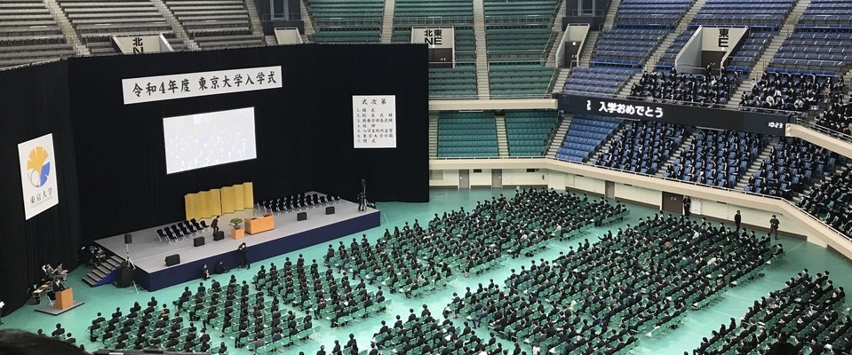

HOME
ニュース
連絡先（SNS）
東大理系生お役立ちツール
外部リンク
HOME
ニュース
連絡先（SNS）
東大理系生お役立ちツール
外部リンク

NOTICES
2023年5月30日
ツイート一時停止のお知らせを通知しました。
2023年5月28日
フォロワーさまが500人を突破しました。
2023年5月11日
ニュース・お知らせの掲載ページをこちらに移転しました。
このサイトについて
こちらは、Webツール制作が趣味の「かっちゃん」によって運営されている個人サイト「ランゲルハンス棟」です。ご自由にご覧ください！
Kacchan Focus
ここでは、最近制作したWebツールを紹介しております。ぜひ見ていってください！
あの、東大さん、
東大150周年まであと
日
なんですよね。気が早すぎですね！
問題のページを開く
あなたが五月病になるまで
あなたが五月病になるまであと何日かを常に表示してくれます。ただし、すでに五月病に罹っているうp主には関係ないことです。
ページを開く
ソースコードを見る
教務課お知らせ観測ツール
pythonなどを用いて、東大教養学部の教務課のお知らせを無理矢理Lineに届くようにした装置です。まあ、がばがばですが。
ソースコードを見る
ソフトクリームデコレーター
ソフトクリームの着せ替えアプリです。うp主の極めて幼稚な意図に気づいた人は何人いただろうか...。まあ、どうでもいいことではあるけれども。
ページを開く
ソースコードを見る
ナウルさんツイートクリエーター
ナウルさんの「一年のn％終了」ツイートを再現したはいいけれど、ひとさまのツイートを真似て何が楽しいのだろう？？
ページを開く
ソースコードを見る
素数判定プログラム
わたしが初めてWebに公開し、ツイートしたWebアプリケーションです！ 簡単なhtmlとJavaScriptとで動いていることが特徴です。
ページを開く
素因数分解プログラム
「素数判定プログラム」を魔改造して、素因数分解ができるようにしました。とある素因数分解が好きなニキに対する献上品です！
ページを開く
フラッシュ展開・因数分解
中学3年学習範囲の関門の一つである「展開」「因数分解」の初級練習ツールです。内蔵プログラムによりランダムに問題を作り出します。
ページを開く
ソースコードを見る
フラッシュ素因数分解ニキ
全国の素因数分解ニキのためだけの、素因数分解の練習ができるツールです。「展開・因数分解」ツールと同じように、乱数生成により問題を作ります。
ページを開く
ソースコードを見る
HOME
ニュース
連絡先（SNS）
東大理系生お役立ちツール
外部リンク
© 東京大学駒場キャンパス ランゲルハンス棟